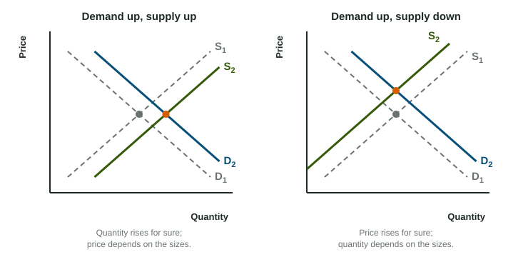

Concert tickets sell out in seconds, then reappear online at three times the price. A store's winter coats are still on the rack in March, marked half off. Both are markets out of balance, and in both the price is moving toward the one level where buyers want exactly what sellers offer.
Equilibrium
Put the demand curve and the supply curve on the same graph. They cross at one point: market equilibrium. The equilibrium price is the price at which the quantity demanded equals the quantity supplied, and that common amount is the equilibrium quantity. At that price, every buyer who wants the good at that price gets it and every seller who wants to sell at that price finds a buyer, so nothing pushes the price to change.
Shortage and surplus

At any other price the market is in disequilibrium:
- Below the equilibrium price, quantity demanded is greater than quantity supplied: a shortage, equal to Qd minus Qs. Buyers compete for the scarce units and sellers find they can charge more, so the price rises. As it does, the quantity demanded falls and the quantity supplied rises until they meet.
- Above the equilibrium price, quantity supplied is greater than quantity demanded: a surplus, equal to Qs minus Qd. Sellers with unsold goods cut prices, so the price falls until the market clears.
Worked example: shortage and surplus from a schedule. At a winter fair, cocoa buyers want 90 cups at $1, 75 at $2, 60 at $3, 45 at $4 and 30 at $5; sellers offer 30, 45, 60, 75 and 90 at the same prices.
- Equilibrium. At $3, 60 cups are demanded and 60 supplied, so the equilibrium price is $3 and the quantity 60.
- At $2, the shortage is cups, so the price is pushed up.
- At $5, the surplus is cups, so the price is pushed down.
- If demand rises by 30 cups at every price, the new quantities demanded are 120, 105, 90, 75 and 60, which match supply at $4 (75 cups): a higher price and a larger quantity.
Subtract the smaller quantity from the larger, and say which it is: a shortage below equilibrium, a surplus above it. Adding the two quantities is a common slip.
One curve shifts
When one curve shifts, the equilibrium slides along the other curve to a new point. Draw it the way readers score it: label the axes (Price, Quantity), keep the original curve and label it with subscript 1, draw the new curve with subscript 2 and an arrow, mark both equilibria with dashed lines to both axes (P1, P2, Q1, Q2), and say what happened to each.
| Change | Equilibrium price | Equilibrium quantity |
|---|---|---|
| Demand increases | rises | rises |
| Demand decreases | falls | falls |
| Supply increases | falls | rises |
| Supply decreases | rises | falls |
Worked example: an input cost rises. A drought destroys much of the orange crop, and oranges are the input for orange juice.
- Which curve? Juice makers' costs rise, so the supply of orange juice shifts left (S1 to S2). Demand stays put.
- New equilibrium. S2 meets D higher and to the left.
- State it. The equilibrium price rises from P1 to P2 and the equilibrium quantity falls from Q1 to Q2.
- At the old price, P1, quantity supplied on S2 is now less than quantity demanded: a shortage, which is what pushes the price up to P2.
Both curves shift

When demand and supply shift at the same time, work out what each shift does to price and to quantity on its own. Where the two agree, the change is certain. Where they disagree, the change is indeterminate: it depends on which shift is larger. A study says blueberries are healthy (demand rises: price up, quantity up) while a frost damages the crop (supply falls: price up, quantity down). The price rises for sure; the quantity is indeterminate. Say exactly that on the exam, and do not draw your graph as if you knew the sizes.